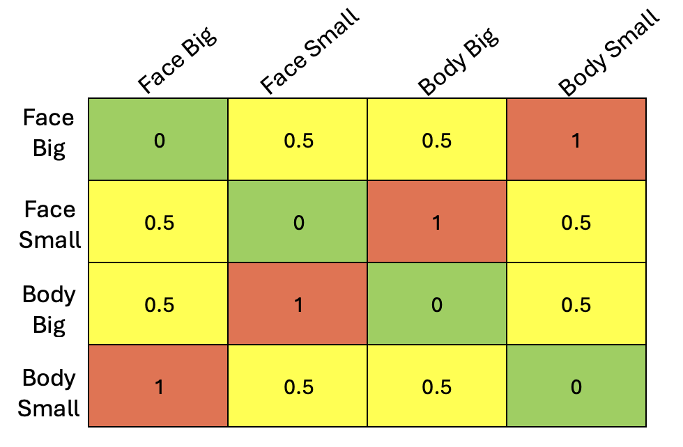

The other day, I was running a representational similarity analysis (RSA) comparing a model representational dissimilarity matrix (RDM) to neural data. In my case, I had a simple 2x2 design (e.g., size x category: big/small x face/body), and I wanted to test whether a region showed selectivity to both factors. One way to do this is to construct a model RDM where entries reflect shared structure, with an intermediate value (e.g., 0.5) to capture partial similarity (see example below).

Intuitively, I expected that changing this intermediate value, thereby modulating the strength of selectivity, would change how well my model correlated with the neural data. Out of curiosity, I coded this up. I quickly realized that even though I varied this value across a wide range [0.1,0.2,...,0.9], I always got the same exact Pearson correlation value. But, why?
To try to figure this out, I went back to the math. In doing so, I learned something interesting about Pearson correlations: as long as the model vector has only two distinct values (\(d_{1}\) and \(d_{2}\)) and their positions in the vector are fixed, the magnitude of the Pearson correlation remains the same. This happens because after mean-centering, the resulting vector can be rewritten as scalar multiples of the same contrast vector.
To show this more clearly, I will start with the following vector that corresponds to the mixed-selectivity matrix above:
\[ \vec{m_v} = [d,d,1,1,d,d] \]
The formula for a Pearson correlation is:
\[ r = \frac{Cov(X,Y)}{\sigma_{x}\sigma_{y}} \]
That is, what the Pearson correlation is measuring is whether two variables (in this case x and y), deviate from their means (covary) together normalized by the variances of each variable.
Which can be rewritten as:
\[ r = \frac{ \sum_{i=1}^{n}(x_i-\bar{x})(y_i-\bar{y}) }{% \sqrt{\sum_{i=1}^{n}(x_i-\bar{x})^2}\sqrt{\sum_{i=1}^{n}(y_i-\bar{y})^2}} \]
For our case, we let x = \(\vec{m_v}\) and y will be our data that we are correlating with (the data we are correlating with does not change so we can just leave it untouched). We can plug this into the above equation -
\[ r = \frac{ \sum_{i=1}^{n}(m_i-\bar{m})(y_i-\bar{y}) }{% \sqrt{\sum_{i=1}^{n}(m_i-\bar{m})^2}\sqrt{\sum_{i=1}^{n}(y_i-\bar{y})^2}} \]
You will note that Pearson correlation does not operate on raw vectors. Before performing any sort of calculations, the elements in a vector are demeaned, removing any constant shared component between them. You'll see shortly why this matters for our model vector.
Let's go ahead and demean our model vector: \(m_i-\bar{m}\)
The mean \(\bar{m}\) = \(\frac{4d+2}{6}\) = \(\frac{2(d+1)}{6} = \frac{2d+1}{3}\)
Note that \(\vec{m_v}\) has two cases (two different values), d and 1.
Case 1 - \(m_i\) = d
\[ m_i-\bar{m} = d - \frac{2d+1}{3} = \frac{3d-2d-1}{3} = \frac{d-1}{3} \]
Case 2 - \(m_i\) = 1
\[ m_i-\bar{m} = 1 - \frac{2d+1}{3} = \frac{3-2d-1}{3} = \frac{2-2d}{3} = \frac{2(1-d)}{3} \]
All together: \[ m_i-\bar{m} = [\frac{d-1}{3},\frac{d-1}{3},\frac{2(1-d)}{3},\frac{2(1-d)}{3},\frac{d-1}{3},\frac{d-1}{3}] \]
We can factor out a common term of \(\frac{1-d}{3}\) \[ m_i-\bar{m} = (\frac{1-d}{3})[-1,-1,2,2,-1,-1] \] \[ m_i-\bar{m} = (\frac{1-d}{3})\vec{v} \]
This right here is the key insight! We have rewritten our demeaned vector as a scalar multiplier (in our case, \(\frac{1-d}{3}\)) multiplied by a vector ([-1,-1,2,2,-1,-1]).
This means that \(\textbf{After mean-centering, all resulting vectors lie on the same line - same magnitude in correlation.}\)
But, let's continue with the math so that you can see how this arises naturally from the Pearson correlation equation.
Beginning with the numerator:
\[ \sum_{i=1}^{n}(m_i-\bar{m})(y_i-\bar{y}) \]
\[ \sum_{i=1}^{n}(\frac{1-d}{3})\vec{v}(y_i-\bar{y}) \]
Because \(\frac{1-d}{3}\) is a constant that does not depend on i, we can pull it out from the sum to get
\[ (\frac{1-d}{3})\sum_{i=1}^{n}\vec{v}(y_i-\bar{y}) \]
Turning to the denominator:
\[ \sqrt{\sum_{i=1}^{n}(m_i-\bar{m})^2}\sqrt{\sum_{i=1}^{n}(y_i-\bar{y})^2} \]
We will focus on the first square root term, because again our data are constant.
\[ \sqrt{\sum_{i=1}^{n}(\frac{1-d}{3}\vec{v})^2} \] \[ \sqrt{\sum_{i=1}^{n}{(\frac{1-d}{3})}^2(\vec{v})^2} \]
As before, the \(\frac{1-d}{3}\) can be pulled out of the sum sign
\[ \sqrt{{(\frac{1-d}{3})}^2\sum_{i=1}^{n}(\vec{v})^2} \] and simplifying... \[ \lvert \frac{1-d}{3} \rvert \sqrt{\sum_{i=1}^{n}(\vec{v})^2} \]
So the denominator all together is: \[ \lvert \frac{1-d}{3} \rvert \sqrt{\sum_{i=1}^{n}(\vec{v})^2}\sqrt{\sum_{i=1}^{n}(y_i-\bar{y})^2} \]
Putting this all together:
\[ \frac{(\frac{1-d}{3})\sum_{i=1}^{n}\vec{v}(y_i-\bar{y})}{\lvert \frac{1-d}{3} \rvert \sqrt{\sum_{i=1}^{n}(\vec{v})^2}\sqrt{\sum_{i=1}^{n}(y_i-\bar{y})^2}} \]
The \(\frac{1-d}{3}\) cancels, leaving us with
\[ \frac{\sum_{i=1}^{n}\vec{v}(y_i-\bar{y})}{\sqrt{\sum_{i=1}^{n}(\vec{v})^2}\sqrt{\sum_{i=1}^{n}(y_i-\bar{y})^2}} \]
So, we see that the magnitude Pearson correlation does not depend on the value of "d".
This is a specific example of a more general case. As mentioned above, if instead of writing my model vector as:
\[ \vec{m_v} = [d,d,1,1,d,d] \]
I were to take a more generic case where I have a model vector with elements \(d_{1}\) n times and \(d_{2}\) p times, I can show that this holds for any model vector with two distinct entries - as long as their positions in the vector do not change.
As before, taking the average of the model vector:
\[ \bar{m} = \frac{n d_{1} + p d_{2}}{n+p} \]
Case 1: x = \(d_{1}\) -
\[ d_{1} - \frac{n d_{1} + p d_{2}}{n+p} \]
\[ \frac{n d_{1} + p d_{1} - n d_{1} - p d_{2}}{n+p} \]
\[ \frac{p d_{1} - p d_{2}}{n+p} \]
\[ \frac{p(d_{1} - d_{2})}{n+p} \]
Case 2: x = \(d_{2}\) -
\[ d_{2} - \frac{n d_{1} + p d_{2}}{n+p} \]
\[ \frac{n d_{2} + p d_{2} - n d_{1} - p d_{2}}{n+p} \]
\[ \frac{n d_{2} - n d_{1}}{n+p} \]
\[ \frac{-n(d_{1} - d_{2})}{n+p} \]
Putting this all together, we can see that we are left with the same generic constant multiplied by a contrast vector! In this case,
\[ \frac{d_{1} - d_{2}}{n+p}[p, . . . ,p, -n,...,-n] \]
And we know from our earlier derivation that \(\frac{d_{1} - d_{2}}{n+p}\) will cancel out with the denominator.
What I have shown here is that two-level vectors - as long as their elements maintain their relative ordering - collapse into one dimension after centering: they become a scaled version of one pattern. This does not happen with most vectors (e.g., vectors with at least three distinct values).
Thank you to Alish Dipani for the comments and constructive feedback. All remaining mistakes are mine and mine alone.